Deel 1: Vernieuwing wisselcomplexen Waalhaven...
- dinsdag 02 december 2008 20:50
- Geschreven door Joachim
In de nacht van zondag 22 oktober op maandag 23 oktober is begonnen met het vernieuwen van de wisselcomplexen Waalhaven I en II. Het vernieuwen van deze wisselcomplexen is noodzakelijk, omdat het spoor op sommige locaties onstabiel lag. De wisselcomplexen Waalhaven I en II liggen respectievelijk ten oosten en westen van de gelijknamige lijnwerkplaats.
Het oude spoor is voor een groot gedeelte reeds verwijderd. Alvorens is op een aantal locaties de spoorbeveiliging gedemonteerd door personeel van de RET. Op beide wisselcomplexen is inmiddels een nieuw ballastbed gerealiseerd. Op sommige locaties is zelfs al nieuw spoor gelegd. De sporen worden door grote hijskranen op hun plek getild.
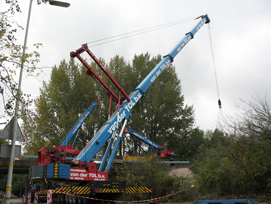
Grote hijskranen tillen sporen van of op hun plek. De foto is genomen ter hoogte van wisselcomplex Waalhaven I.
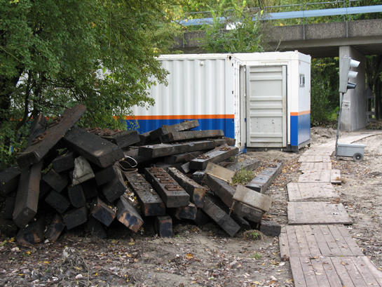
De oude bielsen van hout worden aan de kant gezet. De nieuwe sporen zijn allen voorzien van betonnen bielsen.
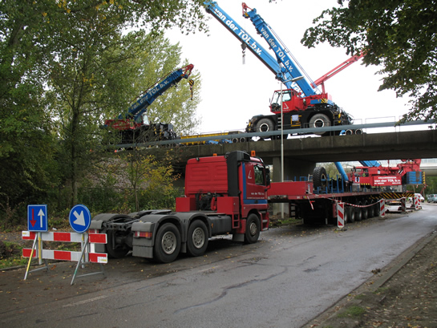
Op het viaduct staat een wat kleinere hijskraan. Deze hijskraan kan ook over een spoorbaan rijden.
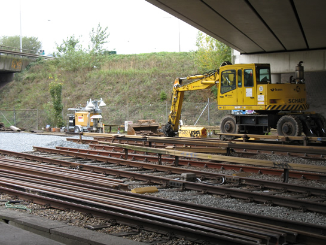
Wisselcomplex Waalhaven II. Op de voorgrond de gebruikte spoorstaven en op de achtergrond het opgebroken spoor.
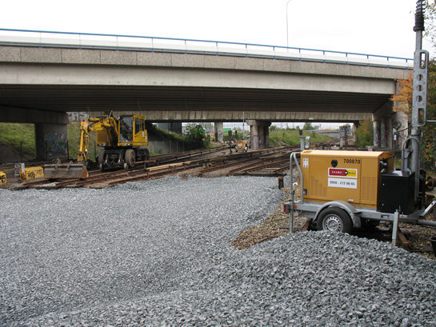
Enkele meters verderop: het nieuwe ballastbed.
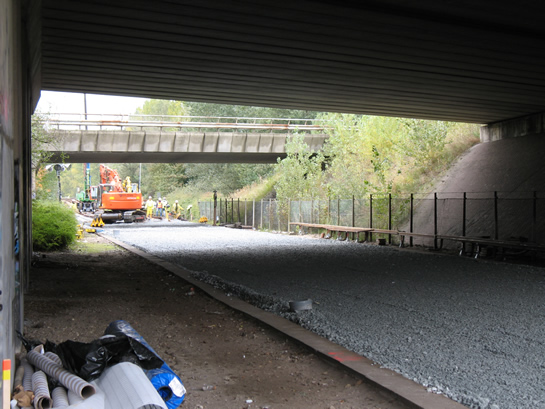
Op de achtergrond wordt gewerkt aan de sporen. Ter hoogte van het in de nabijheid gelegen gelijkrichterstation "Zuidelijke Randweg" worden de sporen voor wisselcomplex Waalhaven II aangeleverd.
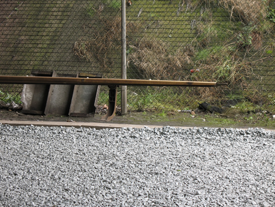
De derde rail wordt waar dat mogelijk is gedemonteerd en aan de kant gezet.
Dienstuitvoering Erasmuslijn en Calandlijn
De Calandlijn wordt gedurende de werkzaamheden voornamelijk bereden door driewagentreinen. Op het traject De Akkers-De Terp v.v. wordt een groot aantal wagendiensten ingezet met rijtuigen van het Type B MG2/1. Tijdens de daluren (9.00-15.00 uur) wordt er om de 12 minuten gereden, tijdens de spitsuren (7.00-9.00 uur en 15.00-18.00 uur) worden extra wagendiensten ingezet, hierdoor wordt het traject Capelsebrug-De Akkers om de 4 minuten bediend. Metro's uit Nesselande rijden om de 12 minuten door naar Spijkenisse, vanuit Ommoord wordt tot Schiedam Centrum gereden, eveneens om de 12 minuten. 's Avonds (na 19.00 uur)wordt er vanuit De Terp en Nesselande gereden om de 15 minuten, metro's uit Ommoord rijden met diezelfde frequentie niet verder dan station Kralingse Zoom.
De Erasmuslijn wordt bediend met driewagentreinen, die in de spits- en daluren om de 5 minuten het traject Centraal Station-Slinge v.v. aandoen. De reisinformatie op de RET-website vermeldt overigens dat er om de 4 minuten gereden wordt. Doorgaans wordt er gekeerd achter station Slinge, op de keersporen. In de avonduren gaat de frequentie naar beneden en wordt er om de 10 minuten gereden.
Emplacement Waalhaven is gedurende de werkzaamheden aan de wisselcomplexen zo goed als leeg. Alleen werkmaterieel en in de werkplaats gestalde metrorijtuigen zijn er deze week te vinden. Gedurende de spitsuren is daarnaast op de Calandlijn zo goed als al het beschikbare materieel in dienst.
Vervangend busvervoer
De RET heeft twee buslijnen ingesteld om het vervoer van en naar de stations Rhoon en Poortugaal aan te bieden. Buslijn 98 rijdt van station Hoogvliet naar station Rhoon en Poortugaal, en omgekeerd. Deze buslijn rijdt gedurende de hele dag om de 15 minuten. Buslijn 99 rijdt van station Slinge naar station Rhoon, in de spitsuren om de 8 minuten, in de daluren om de 12 minuten en in de avonduren om de 15 minuten. Voor rolstoelvervoer kan men zich wenden tot het RET-personeel.
Onderstaande foto's geven een beeld van de minder allerdaagse metrodienst.
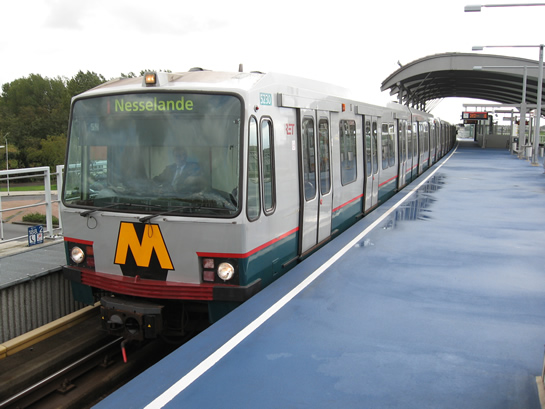
Wagendienst 555 in de "reguliere" dienst; richtingfilm Nesselande op de Beneluxlijn (station Pernis spoor 2).
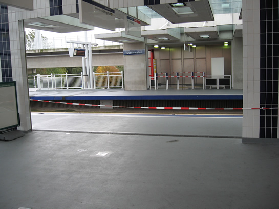
Op station Tussenwater zijn de perrons van de Erasmuslijn afgezet met linten.
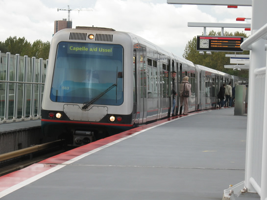
In grote aantallen aanwezig: Type B MG2/1 op de Calandlijn, hier op Tussenwater.
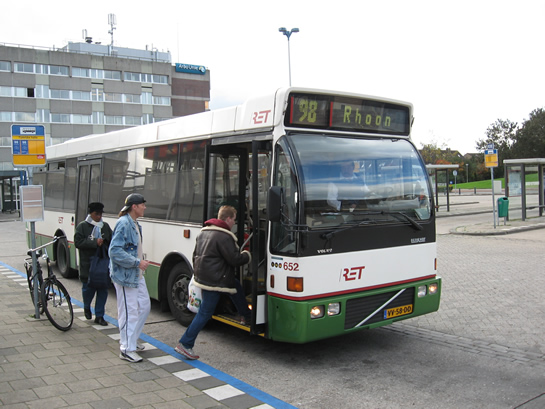
Vervangend busvervoer, hier lijn 98 op station Hoogvliet.
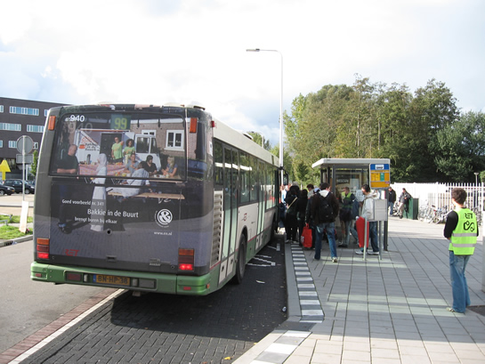
Bus 99 staat op het punt van Poortugaal te vertrekken naar Rhoon en eindbestemming Slinge.
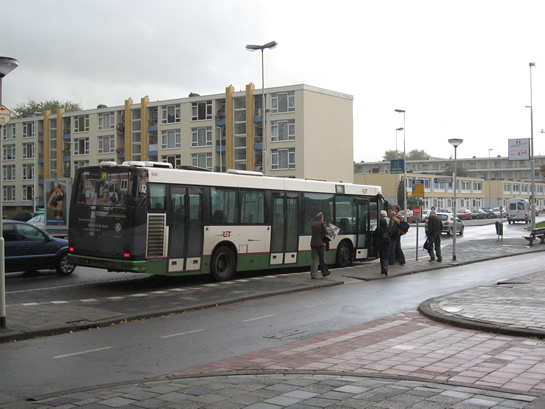
Dezelfde bus, maar nu nabij station Slinge.
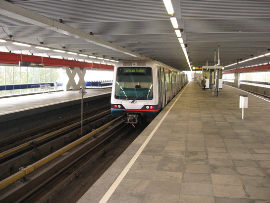
Tijdelijk eindpunt van de Erasmuslijn, station Slinge.
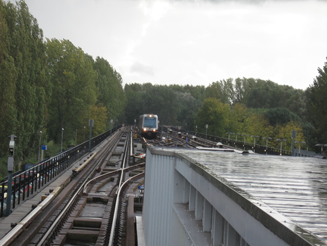
Meestal wordt er gekeerd op de Slinge keersporen.
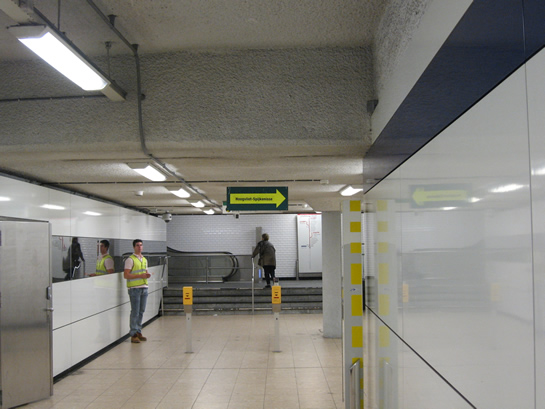
Met grote gekleurde pijlen en ondersteunend personeel wordt gewezen op de alternatieve route, hier op station Beurs.
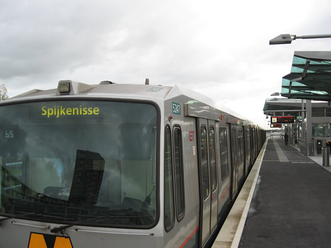
Wagendienst 565 staat op het punt te vertrekken van station Nesselande richting Spijkenisse, de langst mogelijke rit op het metronet vandaag de dag.